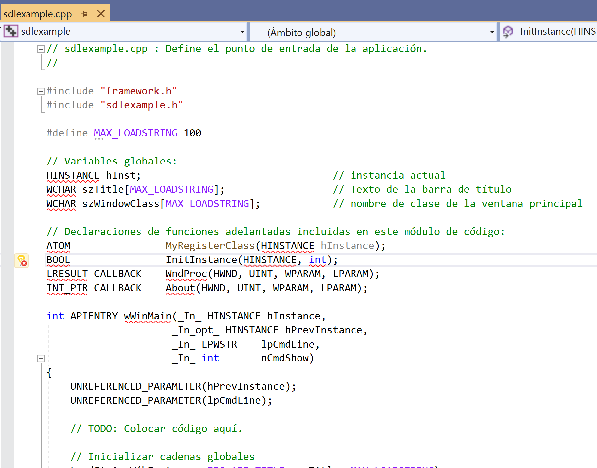
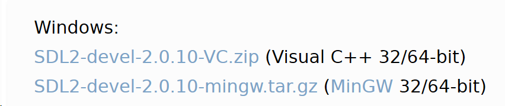
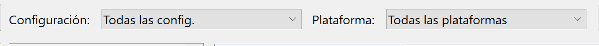
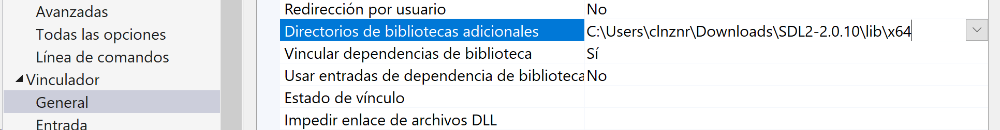
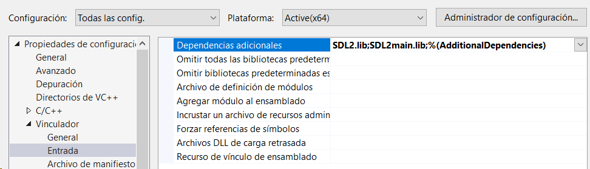
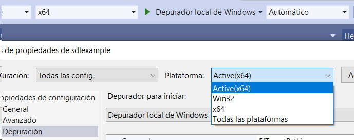
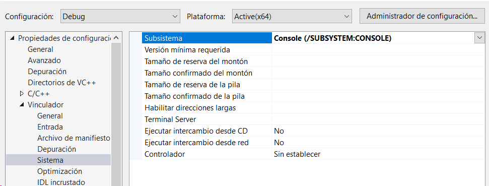

Compilación C/C++
Carlos León
cleon@ucm.es
Cómo se pasa de un ejecutable a C++
Crear un ejecutable desde código C++ implica 3 pasos:
- Preprocesado
- Compilación
- Enlazado
Desarrollo
while(!terminado):
preprocesar \(\rightarrow\) compilar \(\rightarrow\) enlazar \(\rightarrow\) depurar
Release
if(fin):
preprocesar \(\rightarrow\) compilar en release \(\rightarrow\) enlazar con librerías release \(\rightarrow\) empaquetar
Preprocesado
El preprocesador es un programa que entiende directivas #define,
#include, #ifndef
Esas directivas no son sintaxis C/C++
Es un proceso básico, muchas veces de simple reemplazo o elección de texto
Trabaja en un archivo cada vez, y no analiza si el C++ es correcto o no
Genera algo parecido a un archivo C++ alternativo, ya sin directivas, sólo con C++
Y se pasa a compilar
Compilación
La compilación es la traducción de código C++ (ya con el preprocesador aplicado) a código máquina (que cambiará, dependiendo de la plataforma)
Los compiladores permiten generar código objeto por cada archivo de código de forma independiente
Es posible compilar correctamente archivos C++ que hacen referencia a funciones declaradas, pero no implementadas:
void g();
void f() {
g(); // válido para *compilar*
}
Si juntamos varios archivos en código objeto juntos, tenemos una biblioteca estática (static library)
Los errores de C++, o de llamadas a cosas no declaradas, ocurren durante el compilado
Bibliotecas durante la compilación
Muchas funciones no las declaramos nosotros, pero sí las usamos
Como al compilador no le importa la implementación, sólo la declaración, nos vale con un .h:
#include "SDL.h" // sólo declaraciones
Enlazado
Enlazar consiste en convertir varios archivos en código objeto en un ejecutable o biblioteca de vínculo dinámico (dynamic/shared library)
Sólo se puede enlazar cosas que ya estén compiladas
Eso quiere decir que en enlazador (linker) da un tipo de errores que no son de C++, sino de enlazado de objetos
En general, estos errores ocurren cuando hemos usado una cosa que está declarada, pero no implementada:
void g();
void f() {
g(); // si ningún otro archivo implementa `g`
// el enlazador dará un error
}
Bibliotecas durante en enlazado
Durante en enlazado, hay que decirle al programa en qué archivos están los símbolos que no hemos creado nosotros
Es decir, hay que decirle dónde están los .lib (VS) que corresponden a
los .h
Si hemos compilado con los .h correctos, pero no usamos los .lib
correspondientes, tendremos un error de enlazado
Configuraciones
Hay muchas maneras de traducir el código desde C++ a código máquina
Los compiladores ofrecen muchas opciones para decir qué tipo de traducción queremos hacer
Arquitectura
Se puede generar código para 32 y 64 bits (usualmente)
Es importante usar bibliotecas que sean de la misma plataforma que nuestro ejecutable
Optimización
Hay toda una familia de opciones (dependiendo del compilador) que permiten que se apliquen técnicas de traducción que generan un código más eficiente
Pueden cambiar la lógica de nuestro código, pero no el comportamiento final (…)
De hecho, hay algunas opciones de optimización "peligrosas": pueden cambiar la semántica del programa, a cambio de una optimización muy agresiva
(También las hay seguras)
Depuración
Cuando compilamos, perdemos todo el código fuente
Entonces, ¿cómo sabe el depurador en qué línea de código estamos?
Con ciertas opciones, el compilador guarda información sobre la relación entre líneas de código máquina, y el código C++ correspondiente (archivo y línea)
Los símbolos de depuración pueden estar:
- En el ejecutable (
GCC) - En un archivo separado (
PDBen VS)
Opciones de ejecución
En un IDE no sólo construimos, también ejecutamos
Cuando un programa se ejecuta, se ejecuta en una ruta concreta, y esa es la ruta base
Podemos cambiar la ruta base, que es a partir de la cual el ejecutable encontrará los recursos:
// /raiz_proyecto
// ejecutable.exe
// /subcarpeta
// archivo.txt
//
file.open("subcarpeta/archivo.txt")
Ejemplo GCC
Compilar:
gcc -c sdl.gcc -I/usr/local/include/SDL2
Enlazar:
gcc sdl.o -L/usr/local/lib -lSDL2 -o sdl.exe
Ejecutar:
./sdl.exe
Compilar y enlazar:
gcc sdl.cpp -I/usr/local/include/SDL2 -L/usr/local/lib -lSDL2 -o sdl.exe
Añadir información de depuración:
gcc -g sdl.cpp -I/usr/local/include/SDL2 -L/usr/local/lib -lSDL2 -o sdl.exe
Optimización
gcc -O2 sdl.cpp -I/usr/local/include/SDL2 -L/usr/local/lib -lSDL2 -o sdl.exe
Ejemplo Visual Studio

Figura 1: Creamos una nueva "aplicación de Windows"

Figura 2: Ponemos los nombres de las rutas

Figura 3: Borramos el contenido
Lo reemplazamos por:
#include "SDL.h"
int main(int char, char* argv[])
{
return 0;
}
Es importante poner:
int main(int char, char* argv[]) {}
y no sólo:
int main() {}
Para que no haya problemas de enlazado con SDL

Figura 4: Bajamos las "Development libraries"
Ahí están:
- Los
.hpara compilar - Los
.libpara enlazar - La
.dllpara ejecutar
Rutas de "includes"

Figura 5: En "Propiedades del proyecto"
Vamos a establecer la misma ruta de includes para "Todas las
configuraciones", en todas las plataformas
Figura 6: Generalmente, los includes valen para varias arquitecturas
Rutas de librerías
Para x64 (aquí ya importa la plataforma):

Figura 7: La ruta de los .lib que queremos usar
Librerías

Figura 8: Los archivos .lib serán encontrados en las rutas que hemos puesto antes
Depuración

Figura 9: Elegimos la ruta desde la que se ejecutará el proyecto al depurar
La ruta tiene que contener el archivo SDL2.dll
Arquitectura

Figura 10: El tipo de código objeto que se va a generar (hoy en día, x64 en general)
Release vs. Debug

Figura 11: Configuramos las opciones de cada una, y elegimos cómo queremos construir
Se pueden crear todas las configuraciones que se quieran
Debug y Release son sólo 2 de ejemplo ya creadas, con parámetros razonables
Consola/sin consola
Es útil tener la consola de Windows en Debug, y quitarla en Release

Figura 12: En Debug
Figura 13: En Release